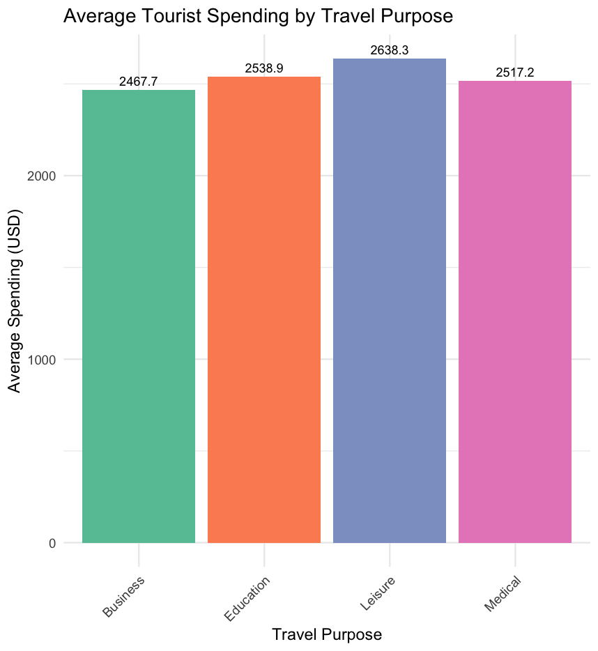

UAE's Performance Analysis
Overview of Trends and Policy Impact
The UAE is often recognised for its oil wealth but its growth story goes much further. The country has introduced reforms such as tax policy, new trade agreements and Expo 2020 that reshaped the economy. This project looks at GDP trends together with these decisions to show how the UAE’s development is more than oil.

UAE Real GDP
Source: World Bank (real GDP).
Between 2010 and 2024, Wholesale & Retail Trade remained the largest sector of the UAE economy, contributing between 16% and 18% of GDP. Construction declined sharply from about 15% in 2010 to just over 11% by 2024, reflecting a slowdown after the property boom. Financial and Insurance activities maintained a stable share of around 12–14%, reinforcing the UAE’s role as a regional financial hub. Meanwhile, Electricity, Gas & Water services grew from 3.6% to nearly 6%, and Healthcare more than doubled from ~1% to 2.3%, showing long-term investment in infrastructure and social services aligned with the UAE Vision 2030 diversification strategy.
Oil vs Non-Oil GDP
Source: UAE STAT
National sector contribution to GDP
From 2010 to 2024, Wholesale & Retail Trade remained the largest contributor to UAE GDP at around 16–18%, though it declined slightly after 2015 as e-commerce and global retail slowdowns reshaped demand. Construction’s share fell sharply from ~15% in 2010 to ~11% in 2024, mirroring the post–2008 property correction and a pivot toward sustainable urban planning after Expo 2020. By contrast, Electricity, Gas & Water grew from 3.6% to nearly 6%, reflecting major infrastructure projects and investment in renewable energy under UAE’s Net Zero 2050 strategy. Meanwhile, healthcare doubled from ~1% to 2.3%, boosted by COVID-19 responses and government spending on medical capacity, showing a gradual shift toward social sector resilience.
GCC Nationals Visiting the UAE
The following visual shows the number of GCC nationals visiting the UAE from 2010 to 2015.
Between 2013 and 2015, the number of GCC nationals visiting the UAE rose sharply, with total regional arrivals increasing from under 1 million in 2013 to over 4 million by 2015- a near 300% surge. This spike coincided with several macroeconomic and policy developments.
In late 2013, Dubai secured its bid to host Expo 2020, triggering extensive infrastructure investment and a boost in regional tourism confidence. Real GDP growth in the UAE remained strong during this period, averaging 4.5% annually, supported by diversification efforts and high public spending despite global oil price fluctuations.
Additionally, the UAE’s political stability and liberalised retail and hospitality sectors positioned it as a safe, high-value destination amid broader regional uncertainty following the Arab Spring. The increase was especially notable among Saudi and Qatari visitors, likely driven by eased cross-border mobility, rising disposable incomes, and the appeal of Dubai’s growing status as a luxury and events tourism hub.

Average Spending by Travel Purpose
This bar chart shows how average spend varies by trip purpose.

UAE Golden Visa — Approvals by Year (Official)
Only years with publicly reported official counts are shown. Source noted below.
Source: UAE Emirates News Agency (WAM) citing GDRFA Dubai — 79,617 approvals in 2022; 47,150 in 2021. 2023 figures are widely reported as 158,000 (Gulf News citing GDRFA) but are not included here to keep to official releases only.